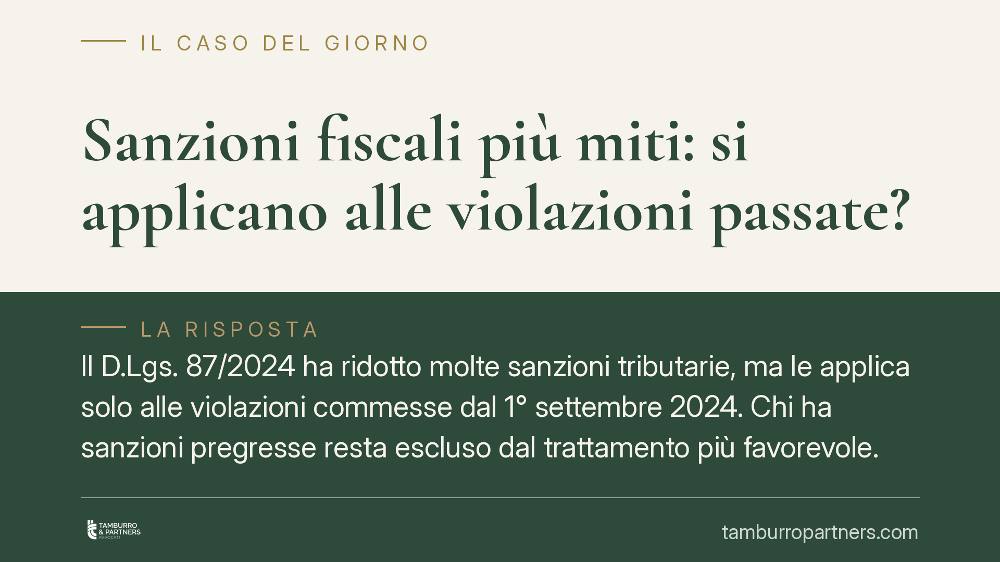

Sanzioni fiscali più miti: si applicano alle violazioni passate?
Il D.Lgs. 87/2024 ha ridotto molte sanzioni tributarie, ma le applica solo alle violazioni commesse dal 1° settembre 2024. Chi ha sanzioni pregresse resta escluso dal trattamento più favorevole. La legittimità di questa deroga alla retroattività della norma più mite è oggetto di un contenzioso ancora aperto, con la giurisprudenza di merito divisa e possibili sviluppi in sede europea.

Il nodo: dal 1° settembre 2024 in poi
La riforma del sistema sanzionatorio tributario (D.Lgs. 87/2024) ha ridotto in modo significativo l'entità di numerose sanzioni amministrative. Il beneficio, però, non è generalizzato: l'articolo 5 del decreto limita l'applicazione delle nuove misure alle violazioni commesse a partire dal 1° settembre 2024.
Ne deriva una disparità evidente. Due contribuenti che hanno commesso la medesima violazione, uno prima e uno dopo quella data, subiscono sanzioni di importo diverso pur a parità di condotta. La questione è se tale deroga alla retroattività della norma più favorevole (la cosiddetta *lex mitior*, legge più mite) sia legittima.
Avvertenza sulla fonte. La pronuncia della Corte di Cassazione richiamata dalla stampa specializzata (indicata come sent. n. 13623/2026) riporta estremi che, allo stato, non risultano pienamente verificabili. Riferiamo pertanto il principio che le viene attribuito con la dovuta cautela, invitando a confermare numero, sezione e data di deposito prima di farne uso in giudizio.
Inquadramento normativo
In materia penale la retroattività della norma più favorevole è presidiata dall'art. 2 c.p. e gode di copertura costituzionale. Diverso è il regime delle sanzioni amministrative, incluse quelle tributarie: qui il *favor rei* è previsto dall'art. 3 del D.Lgs. 472/1997, ma non ha rango costituzionale assoluto.
Lo ha chiarito la Corte costituzionale con la sentenza n. 193/2016: la retroattività della sanzione amministrativa più mite non è imposta dall'art. 25 Cost., e il legislatore può derogarvi purché la scelta superi il vaglio di ragionevolezza. In altri termini, una deroga è ammissibile, ma deve reggere a una verifica di proporzionalità.
Il quadro si complica quando la sanzione, pur formalmente amministrativa, ha natura sostanzialmente penale. Secondo i criteri elaborati dalla Corte EDU nel caso *Engel c. Paesi Bassi* (sent. 8 giugno 1976) — qualificazione interna, natura dell'illecito, severità della sanzione — una misura particolarmente afflittiva può ricadere nelle garanzie penalistiche convenzionali. In tal caso rileva anche l'art. 49, paragrafo 1, terzo periodo, della Carta dei diritti fondamentali dell'Unione europea, che sancisce l'applicazione retroattiva della pena più lieve nell'ambito del diritto UE.
Implicazioni pratiche
Per il contribuente con contenziosi pendenti su violazioni anteriori al 1° settembre 2024, la posta in gioco è concreta: l'eventuale caducazione della deroga aprirebbe all'applicazione delle sanzioni ridotte anche ai fatti pregressi.
La giurisprudenza di merito non è uniforme. Alcune Corti di Giustizia Tributaria hanno applicato senz'altro la deroga; altre hanno dubitato della sua tenuta, specie per le sanzioni più gravose potenzialmente qualificabili come "sostanzialmente penali". Resta aperta la strada della rimessione alla Corte di Giustizia UE, chiamata a valutare la compatibilità della deroga con l'art. 49 CDFUE per i tributi armonizzati, l'IVA in primo luogo.
Il profilo penal-tributario non va trascurato. Le sanzioni amministrative dialogano con le fattispecie del D.Lgs. 74/2000: le soglie di punibilità e i rapporti tra illecito amministrativo e reato possono incidere sulla strategia difensiva complessiva, soprattutto nei casi in cui la medesima condotta rilevi su entrambi i piani.
Cosa fare in concreto
- Verifica lo spartiacque temporale. Individua con precisione la data di commissione di ciascuna violazione: il discrimine del 1° settembre 2024 determina quale regime sanzionatorio si applica.
- Confronta le sanzioni. Calcola l'importo secondo il regime anteriore e secondo quello riformato, per quantificare l'effettivo divario e valutare l'interesse a contestare la deroga.
- Individua la natura della sanzione. Accerta se la misura, per severità e funzione, possa rientrare tra quelle sostanzialmente penali secondo i criteri *Engel*: è il presupposto per invocare le garanzie convenzionali ed europee.
- Valuta la via europea. Ove ricorrano i presupposti, e in particolare per i tributi armonizzati, è opportuno valutare la prospettazione di una rimessione pregiudiziale alla Corte di Giustizia UE sulla compatibilità con l'art. 49 CDFUE.
- Monitora l'evoluzione giurisprudenziale. La non uniformità delle pronunce di merito e l'attesa di un consolidamento in Cassazione rendono utile aggiornare costantemente l'analisi del rischio e dell'opportunità difensiva.
---
*Contributo informativo a cura di Tamburro & Partners Avvocati — Avv. Giuseppe Tamburro. Non costituisce parere legale.*
Ogni condominio ha una storia a sé.
Se gestisci un'amministrazione e vuoi un confronto su una specifica questione condominiale, scrivi allo studio. Ti rispondiamo entro un giorno lavorativo.